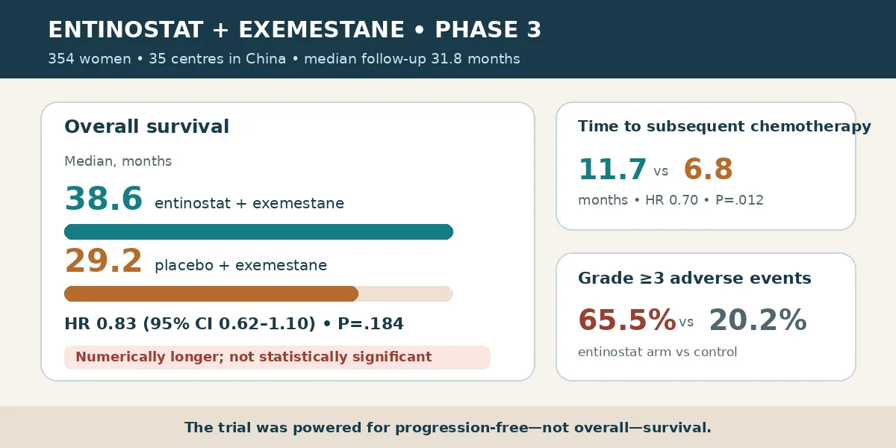

Medyan sağkalımdaki 9,4 aylık sayısal fark tek başına sağkalım yararını kanıtlamaz: HR 0,83, yüzde 95 güven aralığı 0,62–1,10 ve P=0,184'tü. Sonraki tedaviler randomize edilmediği ve ana analiz negatif kaldığı için düzeltilmiş post hoc analizler ile önceki kemoterapi alt grubu hipotez üreticidir. Kemoterapiyi geciktirme bulgusu, ciddi yan etki artışı ve sınırlı genellenebilirlikle birlikte tartılmalıdır.

Bir dakikalık özet
Jiani Wang, Qingyuan Zhang, Xichun Hu, Binghe Xu ve çalışma arkadaşları, EOC103A3101 araştırmasının uzun dönem takibini 20 Ekim 2026'da Signal Transduction and Targeted Therapy'de yayımladı. Soru, bir HDAC inhibitörü olan entinostatın eksemestana eklenmesinin hormon reseptörü pozitif, HER2-negatif ileri meme kanserli kadınlarda plasebo ve eksemestana göre genel sağkalımı iyileştirip iyileştirmediğiydi. Analiz randomize bir faz 3 çalışmadan geliyor; fakat genel sağkalım ikincil sonlanımdı ve çalışma bu sonlanım için güçlendirilmemişti. [1] [2]
Medyan 31,8 aylık takipten sonra genel sağkalım entinostat grubunda 38,6 ay, plasebo grubunda 29,2 aydı. Buna karşılık ölüm için tehlike oranı 0,83, yüzde 95 güven aralığı 0,62–1,10 ve P=0,184'tü. Güven aralığı etkisizlik değerini içerdiğinden 9,4 aylık sayısal fark kesin bir sağkalım üstünlüğü olarak sunulamaz. Üç yıllık sağkalım yüzde 51'e karşı 47, dört yıllık sağkalım yüzde 41'e karşı 36'ydı. [1]
Çalışma nasıl yürütüldü?
Çin'deki 35 merkezde, endokrin tedavi sonrasında ilerleyen veya nükseden hastalığı bulunan 18–75 yaşındaki 354 kadın çift kör biçimde 2:1 oranında iki kola ayrıldı. Entinostat kolundaki 235 kişi haftada 5 mg entinostat ve günde 25 mg eksemestan; kontrol kolundaki 119 kişi haftalık plasebo ve günlük eksemestan aldı. Her katılımcı en az bir doz kullandı. ECOG performans durumu 0 veya 1 olmalıydı; merkezi sinir sistemi metastazı dışlandı ve metastatik hastalık için en fazla bir önceki kemoterapi hattına izin verildi. [1] [2]
Çalışmanın birincil sonlanımı daha önce 6,32 aya karşı 3,72 ay olarak bildirilen progresyonsuz sağkalımdı. Yeni rapor, yaklaşık yüzde 60 veri olgunluğundaki önceden belirlenmiş genel sağkalımı ele alıyor: entinostat kolunda 235 kişiden 138'i, kontrol kolunda 119 kişiden 76'sı hayatını kaybetmişti. Randomizasyon gözlemsel araştırmaya göre güçlü bir temel sağlar; yine de ana sağkalım testinin negatif oluşu ve bu sonlanım için yetersiz güç yorumun merkezinde kalmalıdır. [1]
Diğer sonuçlar: kemoterapi daha geç, toksisite daha fazla
Tedavi bırakıldıktan sonraki kemoterapiye kadar medyan süre entinostatla 11,7 ay, plaseboyla 6,8 aydı; tehlike oranı 0,70, güven aralığı 0,53–0,92 ve P=0,012 olarak bildirildi. Kemoterapisiz sağkalım da 9,3 aya karşı 5,6 aydı. Bu sonlanımlar tedavi yolculuğu açısından değer taşıyabilir; ancak genel sağkalım kanıtının yerine geçmez ve makale her hastanın yaşam kalitesinin mutlaka yükseldiğini göstermiyor. [1]
Klinik bedel belirgindi. Tedaviyle ilişkili yan etki entinostat kolunda yüzde 95,7, kontrolde yüzde 69,7 görüldü; derece 3 veya üzeri olaylar yüzde 65,5'e karşı yüzde 20,2'ydi. Entinostat kolunda ciddi nötrofil düşüşü yüzde 43,8, trombosit düşüşü yüzde 8,5, beyaz küre düşüşü yüzde 6,8 ve ciddi gama-GT artışı yüzde 6,4 oranında bildirildi. 'Yeni güvenlilik sinyali yoktu' ifadesi tedavinin düşük riskli olduğu anlamına gelmez. [1]
Daha olumlu analizler ana sonucu neden değiştirmiyor?
Tedavi sonrasında entinostat grubunun yüzde 78,3'ü, kontrol grubunun yüzde 84,9'u başka bir tedavi aldı; CDK4/6 inhibitörü ve kemoterapi kullanımı da dengeli değildi. Araştırmacıların sonraki tedavileri hesaba katan post hoc modellerinde tehlike oranları 0,75–0,78'e indi ve bazı modeller anlamlılaştı. Ancak sonraki tedaviler randomize değildi. İstatistiksel düzeltme bilinmeyen bütün farkları ortadan kaldıramaz; sonradan yapılan analiz önceden belirlenmiş tedavi niyeti analizinin önüne geçemez. [1]
Daha önce kurtarma kemoterapisi almış 137 kişilik alt grupta medyan sağkalım 25,3 aya karşı 13,8 ay ve tehlike oranı 0,62'ydi. Bu daha küçük grup, çok sayıdaki alt analizden biridir ve tedavi seçimi için kesin değildir. Aynı kombinasyonun uluslararası faz 3 E2112 çalışması daha önce progresyonsuz ya da genel sağkalımda anlamlı iyileşme göstermemişti. Popülasyonlar ve sonraki tedaviler arasındaki farklar uyumsuzluğu kısmen açıklayabilir; bir çalışmayı otomatik olarak geçersiz kılmaz. [1]
Sınırlılıklar ve kanıtın yeri
En önemli sınırlılık, örneklem büyüklüğünün genel sağkalım için değil progresyonsuz sağkalım için hesaplanmış olmasıdır. Sağkalım verisi yaklaşık yüzde 60 olgunluktaydı ve güven aralığı hem olası yararı hem etkisizliği kapsıyordu. Sonraki tedaviler dengesiz ve randomize değildi. Biyobelirteç analizleri de yalnızca deney kolunda yapıldığı için hangi belirtecin gerçek anlamda tedavi yanıtını öngördüğünü saptayamaz. [1]
Bütün merkezler Çin'deydi. Ayrıca hasta alım döneminin bir sonucu olarak önceki CDK4/6 inhibitörü kullanımı düşüktü; oysa bu ilaçlar günümüzde standart bakımın önemli bir parçasıdır. Bulguların güncel ve farklı tedavi yollarından geçen hastalara aktarımı bu nedenle sınırlıdır. Kanıt, incelenen popülasyonda iki rejimi karşılaştırmak için orta düzeydedir; kesin sağkalım yararı, yanıt veren alt grup ya da standart bakım değişikliği iddiası için yeterli değildir.
Finansman, çıkar çatışmaları ve pratik mesaj
Çalışma EOC Pharma ile Çin'deki çeşitli ulusal araştırma programlarınca desteklendi. Hongyan Shang, Taizhou EOC Pharma çalışanı olduğunu bildirdi; diğer yazarlar çıkar çatışması açıklamadı. Makale CC BY-NC-ND 4.0 lisansıyla yayımlandı. Ticari destek sonucu kendiliğinden geçersiz kılmaz; ancak tasarım, analiz ve veri erişimiyle birlikte şeffaf biçimde değerlendirilmelidir. [1]
Pratik mesaj sınırlı ve nettir: entinostat-eksemestan kombinasyonu bu çalışmada sayısal bir sağkalım farkı ve kemoterapiye geçişte gecikme oluşturdu; fakat istatistiksel genel sağkalım üstünlüğü kanıtlanmadı ve ciddi yan etkiler arttı. Kanser tedavisi seçimi önceki tedavilere, hastalık durumuna, toksisite riskine, standart seçeneklere ve hastanın tercihlerine bağlıdır. Bu haber onkoloji ekibiyle ortak kararın yerini tutmaz.
Birincil kaynaklar
Açık erişimli makalenin tam HTML metni; yöntemler, sonuçlar, tablolar, tartışma, sınırlılıklar, finansman, çıkar çatışmaları, veri erişimi ve CC BY-NC-ND 4.0 lisansı incelendi. Çalışma kaydı ClinicalTrials.gov üzerinden de kontrol edildi. Bu, ana kaynağa dayalı editoryal bir değerlendirmedir; bağımsız uzman hakemliği veya tıbbi öneri değildir.
Bu yazı genel bilgilendirme amaçlıdır; kişiye özel tanı veya tedavinin yerini tutmaz.